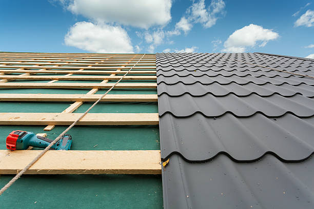
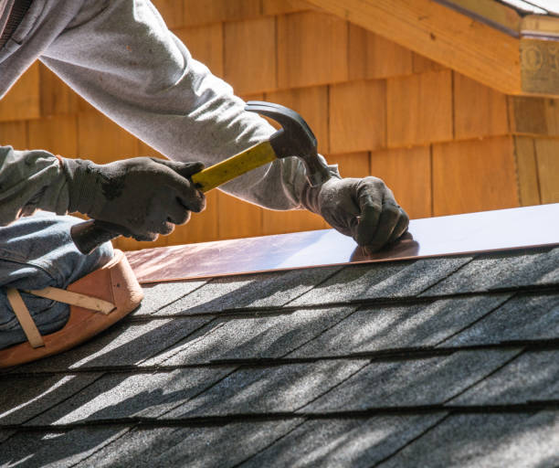

Walled Lake Michigan
info@clarmetalroofing.xyz
Walled Lake Michigan
info@clarmetalroofing.xyz

Transform your home with premium metal roofing in Walled Lake Michigan . Our professional team delivers reliable, long-lasting solutions with modern designs and superior weather resistance for unbeatable protection and curb appeal.
Click Here To Call Us (810) 382-3556At Clar Metal Roofing, we specialize in delivering top-quality metal roofing solutions for residential and commercial properties in Walled Lake Michigan . Our services are tailored to enhance the durability, aesthetics, and energy efficiency of your building.
Metal roofing is celebrated for its outstanding longevity and resilience against harsh weather conditions. Whether you're upgrading your home or seeking a robust roofing solution for your business, our expert team ensures precise installation and superior performance. We offer a diverse range of styles and finishes to complement your architectural preferences and elevate your property's curb appeal.
In Walled Lake Michigan our skilled professionals manage every detail of your metal roofing project with exceptional care. From choosing the ideal materials to meticulous installation, we guarantee a smooth process and impressive results. Our dedication to quality ensures that your metal roof will withstand the elements and provide long-lasting protection.
We recognize that every project is unique, which is why we provide customized solutions tailored to your specific needs. At Clar Metal Roofing, our commitment to excellent service means you can rely on us for a durable, stylish, and energy-efficient roofing solution that will stand the test of time. Choose Clar Metal Roofing in Walled Lake Michigan for unmatched quality and lasting performance.
Residential & commercial Metal roofing
Quality services at affordable prices
Immediate 24/ 7 emergency services


Choose the Best Metal Roofing Company in Walled Lake Michigan at Metal Master Shop
When it comes to securing top-quality metal roofing solutions in Walled Lake Michigan Metal Master Shop stands out as the leading choice. Our commitment to excellence in craftsmanship, paired with premium materials, ensures that your roof not only enhances the aesthetic appeal of your property but also provides unparalleled durability and protection.
At Metal Master Shop, we understand that investing in metal roofing is a significant decision. That’s why we offer a comprehensive range of metal roofing options tailored to meet the unique needs of homeowners and businesses across Walled Lake Michigan . Whether you’re interested in sleek, modern designs or classic, durable metal roofs, our expert team is here to guide you every step of the way.
Our experienced professionals utilize state-of-the-art techniques and equipment to deliver precise installations that stand the test of time. We pride ourselves on exceptional customer service, offering detailed consultations to ensure you make an informed choice that suits both your budget and design preferences.
With a reputation for reliability and excellence, Metal Master Shop is the go-to metal roofing company in Walled Lake Michigan . We are dedicated to providing superior products and services that exceed expectations, ensuring that your property is protected with the best metal roofing solutions available. Trust Metal Master Shop for your next roofing project and experience the difference that expertise and quality make.
Choose Metal Master Shop for unparalleled metal roofing services in Walled Lake Michigan and enjoy peace of mind knowing your investment is in capable hands.
Residential & commercial Metal roofing
Quality services at affordable prices
Immediate 24/ 7 emergency services
Why is metal roof flashing installation so critical? Flashing is essential for directing water off vulnerable areas of your roof, preventing leaks and undue damage. Our metal roof flashing installation services in Walled Lake Michigan are performed by experienced professionals who understand the intricacies of this essential component.
With the right flashing in place, your roofing system will be far more resilient against the elements. Our team will conduct a thorough inspection to identify the best flashing solutions for your roof, ensuring long-lasting protection. We prioritize quality installation to give you peace of mind for years to come.

If you’re embarking on a new construction project consider our metal roofing solutions for a modern and durable finishing touch. At Metal roofing, we work closely with builders and homeowners to integrate high-quality metal roofing systems that complement architectural designs while providing long-lasting performance. We understand the importance of meeting building codes and timelines, which is why our experienced team prioritizes efficient and high-quality installation. Choose us for your new construction roofing needs and ensure a strong, energy-efficient roof is part of your new build.

Combining metal roofing and siding creates a contemporary and cohesive look for your home or business. Our comprehensive metal roofing and siding installation services ensure that your property stands out while providing excellent protection.
We offer a variety of styles and finishes to enhance your property’s curb appeal. Our skilled professionals take care of every aspect of the installation process, ensuring your project is completed on time and to the highest standards. Experience the benefits of metal roofing and siding with our expert services.

A leak in your metal roof can lead to significant damage if not addressed promptly. Our specialized metal roof leak repair services in Walled Lake Michigan are focused on identifying and remedying the source of leaks quickly and effectively. At Metal roofing, we use advanced diagnostic techniques to detect even the smallest leaks, providing a thorough repair to safeguard your home. Our experienced repairs team knows the complexities of metal roofs, allowing us to restore your roof to optimal functionality with minimal disruption. Trust us to handle your metal roof leaks safely and reliably.

Investing in a durable metal roofing system is one of the smartest choices you can make for protecting your property. Our company offers a wide array of durable metal roofing systems designed to withstand severe weather conditions and provide lasting performance.
Our experienced team will assess your needs and recommend the best options tailored to your environment and style preferences. We focus on durability and aesthetics, ensuring that your new roof can handle the test of time while enhancing your property’s appeal.
Maintenance is key to prolonging the life of your roof, and our metal roofing maintenance services are tailored to meet these needs. Regular inspections and maintenance ensure your roof remains in peak condition, helping you avoid costly repairs down the road.
Our skilled team undertakes comprehensive maintenance checks that include cleaning, sealing, and minor repairs. We aim to increase the longevity of your roof while providing peace of mind. Partner with us for ongoing maintenance solutions that keep your metal roofing at its best.

If longevity is what you're looking for, our long-lasting metal roofs are the perfect solution for your property. At Metal roofing, we understand that roofing is a significant investment, which is why we focus on providing products designed for durability. Our metal roofs can last 40 years or more with the right care, far surpassing traditional roofing materials. We utilize top-quality materials and installation practices that ensure your roof stands strong against the elements. Choose Metal roofing for your long-lasting metal roofing and enjoy the confidence that comes with a roof built to last.

Opting for lightweight metal roofing can offer numerous benefits to your structure without compromising strength. At Metal roofing, we specialize in lightweight metal roofing solutions that provide superior load-bearing capabilities while minimizing stress on your building's structure. Our experienced team in Walled Lake Michigan can guide you through your options, helping you select a roofing material that performs exceptionally while being easy to handle and install. Lightweight metal roofing is an excellent choice for both residential and commercial properties, providing efficiency and great aesthetics. Trust us to deliver lightweight solutions that meet your roofing needs seamlessly.
Years Experience
Expert Technicians
Satisfied Clients
Compleate Projects
At Clar Metal Roofing, we understand that choosing the right roofing for your home or business is a significant decision. That’s why we are dedicated to providing unparalleled metal roofing solutions across all cities in Walled Lake Michigan . Our commitment to quality and customer satisfaction sets us apart as the premier choice for metal roofing in the region.
Why choose us? First and foremost, our expertise in metal roofing is unmatched. With years of experience in the industry, our skilled professionals are equipped to handle all types of metal roofing projects, from residential to commercial. We use only the highest quality materials, ensuring your roof is not only durable but also aesthetically pleasing.
Our attention to detail and craftsmanship guarantee that every installation meets the highest standards. We take pride in delivering a finished product that enhances the value and functionality of your property. Additionally, our customer-centric approach means that we work closely with you throughout the entire process, ensuring your specific needs and preferences are met.
At Clar Metal Roofing, we are committed to offering competitive pricing without compromising on quality. We understand the importance of staying within budget while achieving excellent results. Our transparent pricing and free consultations help you make informed decisions without any hidden costs.
Choose Clar Metal Roofing for your next project and experience the difference that professional, reliable, and top-quality service can make. Contact us today to schedule your free estimate and discover why we are the trusted choice for metal roofing in Walled Lake Michigan .
When you’re in search of reliable and skilled metal roofing contractors near me your quest for quality and durability ends here. Metal roofing offers unparalleled protection against the elements, energy efficiency, and long-term savings. Our team of expert contractors is dedicated to delivering superior service and exceptional workmanship. We understand that choosing the right materials and solutions is essential, which is why we use only the highest quality metal products available.
At our company, we pride ourselves on being the best metal roofing contractors near you. With years of experience and a long list of satisfied clients, we guarantee that our services meet your needs and exceed your expectations. Whether you’re looking for installation, repair, or replacement, our knowledgeable team is fully equipped to handle it all.
If you're seeking the best metal roofing companies in Walled Lake Michigan our reputation speaks for itself. We have built our business on the foundation of quality, integrity, and exceptional service. We specialize in various metal roofing solutions, from residential to commercial applications, ensuring we have the ideal system for your requirements.
Our team comprises industry experts who continuously stay updated with the latest trends and advancements in metal roofing. We pride ourselves on providing superior craftsmanship and attention to detail in every project we undertake. What makes us the best? It's our unwavering commitment to customer satisfaction, quality materials, and cost-effective solutions. We understand that every roof is an investment, and we aim to provide you with options that offer both aesthetic appeal and durability.
Installing a metal roof is a significant investment that pays dividends in protection, energy efficiency, and aesthetic appeal. Our metal roof installation services are designed to meet the unique requirements of each client. We take the time to assess your needs and preferences and then tailor our services accordingly.
Our skilled installation team possesses an extensive background in metal roofing. From selecting the best materials to ensuring the installation process is seamless, our focus remains on providing a flawless service that leaves you completely satisfied with your new roof. We are committed to safety, precision, and professionalism in every project we undertake.
High-quality roofing doesn’t have to break the bank. Our affordable metal roofing solutions are designed to fit various budgets without compromising quality. We source quality materials that don’t sacrifice performance and longevity, allowing us to offer competitively priced options. With our transparent pricing, you won’t encounter hidden fees or surprise costs. We’ll work with you to find the right roofing solution that meets your financial needs while offering maximum value for your investment.
If your current roof is showing signs of wear and tear, our metal roof replacement services are here to assist. Whether it’s due to damage from weather, age, or simply a desire for a more durable solution, our team specializes in providing top-notch replacement options tailored to your property.
We assess your existing roof and recommend the best course of action, whether a full replacement or partial re-roofing is necessary. Our selection of metal roofing materials guarantees you’ll find the best fit, ensuring the new roof enhances the value and appearance of your property. Trust us to carry out a smooth and efficient replacement process that adheres strictly to industry safety standards.
Running a successful business starts with a solid roof over your head. Our commercial metal roofing services are tailored to meet the unique needs of businesses in our community. We understand that commercial projects require a different approach, hence we utilize materials and techniques designed specifically for commercial buildings. Our efficient project management ensures minimal disruption to your operations. Trust us to deliver a roofing solution that enhances your business's image, is energy-efficient, and stands the test of time.
For homeowners seeking a robust and stylish roofing option, our residential metal roofing solutions are the perfect choice. Metal roofs are renowned for their durability, energy efficiency, and aesthetic appeal. we specialize in installing metal roofing systems that resonate with the architectural style of your home. Our team provides personalized consultations to help you choose the right color and style, ensuring that your new roof complements your home’s exterior. With a commitment to quality and customer satisfaction, we are dedicated to enhancing the beauty and functionality of your home.
Selecting the right metal roofing system can make all the difference in long-term performance and durability. Our company specializes in offering a variety of metal roofing systems in Walled Lake Michigan focusing on quality and sustainability. From standing seam to metal tiles, our options are engineered to provide superior weather resistance and energy efficiency.
We guide our clients through choosing the ideal metal roofing system that fits both budget and style preferences. Our commitment to excellence ensures that the installation process is handled with care and precision, resulting in a roof that not only looks great but performs exceptionally well for years to come.
Standing seam metal roofs are a highly popular choice due to their seamless appearance and exceptional durability. Our installation services are executed by trained professionals who are proficient in this advanced roofing technique. These roofs are designed to expand and contract with temperature variations, minimizing the risk of leaks and prolonging the longevity of your roof. Not only do standing seam metal roofs offer superior protection, but their sleek design enhances your building's aesthetic appeal. We are dedicated to providing a roof that meets top industry standards for quality and craftsmanship.
Over time, every roof may face the need for repairs, and metal roofs are no exception. Our metal roof repair services are dedicated to promptly identifying and resolving issues before they escalate. Whether it’s fixing a leak, replacing damaged panels, or performing routine maintenance, our skilled team is prepared to tackle every repair.
We pride ourselves on our ability to perform thorough inspections, ensuring that every problem is addressed efficiently and effectively. With our knowledge of different metal roofing systems, we can guarantee that repairs are conducted with high-quality materials that restore your roof to optimal condition.
Understanding the costs associated with metal roofing can help you make informed decisions. At Metal roofing, we provide detailed metal roofing cost estimates tailored to your project . Our estimates take into account various factors, including the type of metal, roofing system, complexity of installation, and additional materials or labor required. We strive to provide transparency in our pricing, ensuring no hidden fees surprise you later. Armed with a detailed estimate, you can budget accurately and plan your roofing project with confidence. Contact us today for your free estimate and let’s make your roofing dreams a reality.
When it comes to installing a new roof, choosing local metal roof installers is essential for quality assurance and accountability. Our team of local metal roof installers in Walled Lake Michigan are not only experts in the field but also familiar with local building codes and weather considerations that can affect your roofing choices.
Being a community-oriented business, we strive to provide our neighbors with dependable service. Our local installers work tirelessly to ensure your project runs smoothly, from the initial consultation to the final inspection. By choosing us, you’re selecting a trustworthy team that prioritizes your satisfaction and the integrity of our workmanship.
Not every building is the same, and that’s why we offer custom metal roofing solutions in Walled Lake Michigan . Our team works closely with you to design a roofing system that meets your specific needs, whether it’s for unique architectural styles or specific functional requirements. We use advanced technology and top-quality materials to create a roof that is not only functional but also enhances the beauty of your property. Regardless of project size, we are committed to delivering personalized solutions that resonate with your vision.
Protecting your metal roof is essential for its longevity. Our metal roof coatings offer a barrier against the elements, helping to prevent rust, leaks, and deterioration. We use high-quality reflective coatings that enhance energy efficiency by keeping your building cooler during the summer. Our team has extensive experience in applying roof coatings, ensuring a smooth and effective application that maximizes the benefits of your roof coating. Keep your roof in top condition with our specialized services.
As energy costs continue to rise, investing in energy-efficient solutions becomes crucial for homeowners and businesses alike. Our energy-efficient metal roofing options are designed to reflect sunlight and reduce heat absorption, thus lowering your cooling costs. At Metal roofing, we offer a variety of reflective roofing materials that align with your sustainability goals while providing impressive aesthetics. Our expert team ensures proper installation so you can enjoy the benefits of an energy-efficient roof for years to come. Choose us for your energy-efficient metal roofing and make a positive impact on your energy bills while contributing to a greener environment.
We offer a stunning selection of metal roof panels for homes in Walled Lake Michigan ensuring a perfect match for your architectural style. Our panels come in a variety of colors and finishes, allowing you to customize the look of your roof while enjoying the robust performance of metal.
Our highly skilled installation team ensures that each panel is fitted correctly for optimal performance and lifespan. Metal roof panels provide excellent protection against harsh weather, and their low maintenance requirements make them a smart choice for homeowners looking to invest in quality.
If you’re looking for a roofing material that combines durability and affordability, consider galvanized steel roofing. Our galvanized steel roofing solutions in Walled Lake Michigan provide excellent resistance to corrosion and environmental damage, making them a favored choice among homeowners and businesses alike.
The unique properties of galvanized steel ensure that your roof remains safe and secure for years to come. Our team will guide you through the selection process, ensuring you choose the right system that fits your style and budget. With our expert installation services, your galvanized steel roof can withstand the test of time while providing outstanding performance.
The Benefits of Metal Roofing in Walled Lake Michigan FL
When it comes to roofing solutions in Walled Lake Michigan FL, metal roofing stands out as an exceptional choice for homeowners seeking durability, efficiency, and aesthetic appeal. Metal roofing offers a host of benefits that make it an ideal option for various climates and environments.
One of the primary advantages of metal roofing is its impressive longevity. Unlike traditional roofing materials, metal roofs are designed to withstand harsh weather conditions, including heavy rain, strong winds, and intense heat. This durability ensures that your investment in metal roofing will pay off over the long term, with minimal maintenance and repair needs.
Energy efficiency is another significant benefit of metal roofing. Metal roofs reflect solar heat, which helps to keep your home cooler and reduces air conditioning costs. This energy-efficient property is especially valuable in the warm climate of Walled Lake Michigan FL, where cooling costs can be a significant concern.
In addition to their practical advantages, metal roofs enhance the curb appeal of your home. Available in various styles, colors, and finishes, metal roofing can complement any architectural design, adding a sleek, modern touch to your property.
Environmental sustainability is also a key consideration. Metal roofing is often made from recycled materials and is fully recyclable at the end of its life cycle, making it an eco-friendly option for conscientious homeowners.
Choosing metal roofing from Health Pro Insulation Services means investing in a high-quality, reliable roofing solution that offers numerous benefits for your home in Walled Lake Michigan FL.
Walled Lake is a city in Oakland County in the U.S. state of Michigan. The population was 6,999 at the 2010 census. The city is bordered by Commerce Township on the north and the city of Novi on the south. As a western suburb of Metro Detroit, Walled Lake is about 20 miles (32.2 km) northwest of Detroit.
We offer a wide selection of colors and styles for metal roofing, including standing seam, corrugated, and metal shingles to match your home’s aesthetic .
Yes, we provide complete roof removal services to prepare your home for the new metal roofing installation in Walled Lake Michigan .
Metal roofing offers durability, longevity, energy efficiency, and a wide range of styles to enhance your home's appearance .
You can request a free estimate from Clar Metal Roofing by calling us or filling out the online form on our website for Walled Lake Michigan .
The installation timeline varies depending on the size of your roof, but most projects are completed within a few days .
Yes, Clar Metal Roofing offers warranties on both materials and workmanship for added peace of mind in Walled Lake Michigan .
Yes, we can install metal roofing over existing shingles provided the structure is sound and the roof is not severely damaged.
Yes, metal roofing is an attractive and durable option that can enhance your home's resale value and appeal .
Metal roofs are designed to withstand extreme weather, including heavy rain, snow, and high winds, making them ideal for Walled Lake Michigan .
Yes, we offer flexible financing options to help you manage the cost of your metal roofing project .
While some homeowners attempt DIY installation, we recommend hiring professionals for safety, quality, and longevity .
Consider your home’s exterior color, neighborhood aesthetics, and personal preference when selecting a color for your metal roof in Walled Lake Michigan .
Yes, building codes vary by area. We ensure all installations meet local codes and regulations .
No, metal roofs reflect solar heat, keeping your home cooler in summer, especially when combined with proper insulation .
The installation process includes an initial consultation, material selection, old roof removal (if necessary), and the actual installation of the metal roof .
Consider factors such as material type, color, style, and insulation options to ensure you choose the best metal roofing for your needs .
Yes, we provide free consultations to discuss your roofing needs and help you choose the best solution in Walled Lake Michigan .
We offer a variety of metal roofing options, including steel, aluminum, and copper, each with unique benefits for your home .
Metal roofing is more durable and longer-lasting than asphalt shingles, making it a superior choice in terms of longevity and performance in Walled Lake Michigan .
Feel free to contact us anytime with your questions, and our team at Clar Metal Roofing will be happy to assist you in Walled Lake Michigan .
The cost of metal roofing installation varies based on material, style, and size. Contact us for a personalized estimate in Walled Lake Michigan .
Signs that your roof needs replacement include leaks, visible wear, and significant damage. We offer free roof inspections to help assess your needs .
If your metal roof is damaged, contact us for repairs. Most damages can be fixed without needing a full replacement in Walled Lake Michigan .
Metal roofs require minimal maintenance, but regular inspections and cleaning are recommended to ensure longevity and performance .
Simply contact us to schedule a consultation, and we'll guide you through the entire process from start to finish .
Factors include the type of metal, roof size, complexity of the installation, and additional features like insulation or ventilation in Walled Lake Michigan .
Yes, metal roofing is made from recyclable materials and can be recycled at the end of its lifespan, making it an eco-friendly choice in Walled Lake Michigan .
Yes, we can install metal roofing on low-sloped roofs, provided proper techniques and materials are used to prevent leaks .
Yes, metal roofing is highly energy-efficient, reflecting solar heat and helping reduce cooling costs .
A properly installed metal roof can last 40-70 years, depending on the material and maintenance .
We are so pleased with our new metal roof from Clar Metal Roofing in Walled Lake Michigan . The quality of the materials and the skill of the installation team were impressive. Our home looks great, and we have peace of mind knowing our roof will last for years. Highly recommend Clar Metal Roofing!
Profession
Clar Metal Roofing in Walled Lake Michigan offered exceptional service from start to finish. The team was knowledgeable and provided clear communication throughout the process. Our new metal roof is beautiful and built to last. We're very happy with the outcome and highly recommend them!
Profession
We were impressed by Clar Metal Roofing's professionalism and quality craftsmanship. Our new metal roof looks amazing and adds a modern touch to our home in Walled Lake Michigan . The process was hassle-free, and the results speak for themselves. Highly recommend them for any roofing needs in Walled Lake Michigan !
Profession
Walled Lake MI Metal roofing Pros
(810) 382-3556
info@clarmetalroofing.xyz
09.00 AM - 09.00 PM
09.00 AM - 12.00 PM